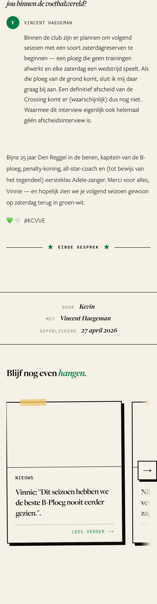
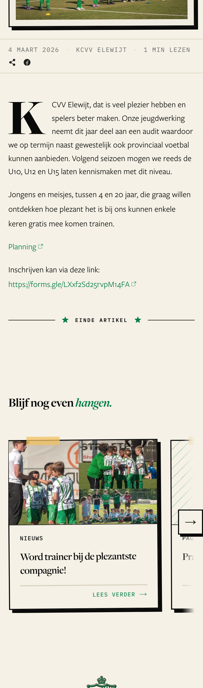
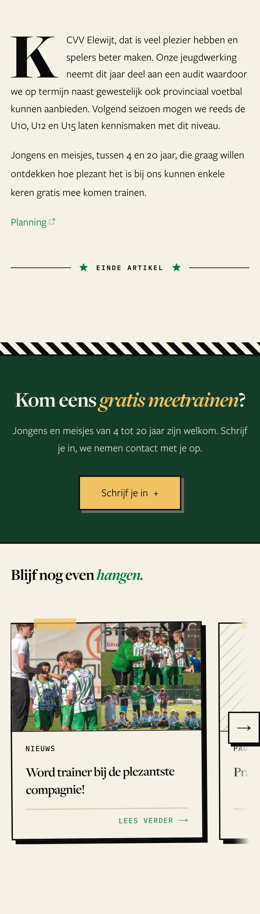
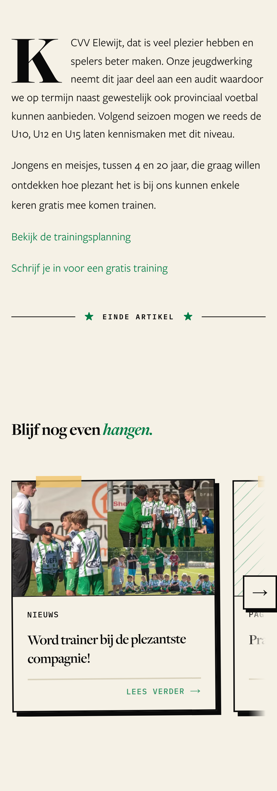
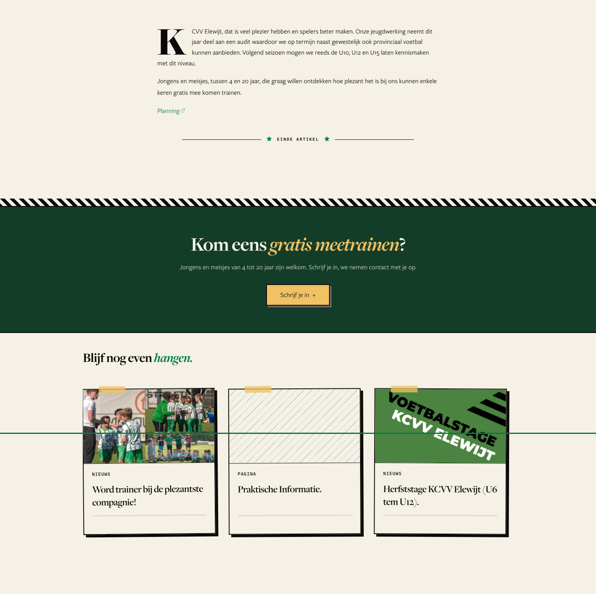

How does an article end?
Screenshots of the live recruitment article Meetrainen met de plezantste compagnie, rebuilt in the browser per option. Ticket #2525.
Every article already ends the same way
Text → EINDE ARTIKEL → credits (interviews) → “Blijf nog even hangen.” row → footer. Decided in #2443 and built. The empty endings this ticket complained about are gone — the interview now ends like this too:

The one thing we want a parent to do is a raw web address
Inschrijven kan via deze link: https://forms.gle/LXxf2Sd25rvpM14FA — small green text. In the last 15 months, 2 of 9 articles were recruitment (Meetrainen…, Word trainer…). Recruiting players and volunteers is the site's first goal. Editors have no button block today — only inline text links.

An optional “call to action” band, filled in by the editor
The same green band the youth, sponsor and membership pages already use (CtaBand). An article gets at most one, and only if the editor fills it in: a question, one line, a button label, a link. It sits after the credits, before “Blijf nog even hangen.”

- A big, clear button for the one action — for an older supporter on a phone.
- No new look: an existing band, used on 5 pages.
- Also fits volunteer calls, event sign-ups, sponsor calls.
- New editor fields and code for ~2 articles a year.
- Risk: editors put a band on every article, and it stops meaning anything. The field's help text must say “only when the article asks the reader to do something”.
No new field — write a proper link sentence
The editor replaces the raw address with a sentence: Schrijf je in voor een gratis training. The ending stays exactly as it is.

- No code. Fixable in Sanity in two minutes.
- The club's most important ask stays a small green line in the text.
Option 1 on a computer

A fixed closer per article type
Recruitment is not a type — both recruitment posts are announcement, the same type as Definitieve reeksindeling 3e nationale. A closer per type would put Schrijf je in under a league table. Only the editor knows what the article asks for.